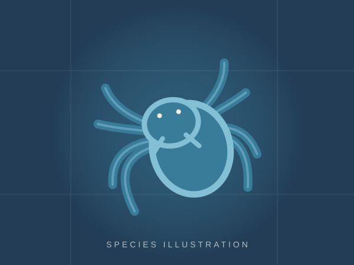
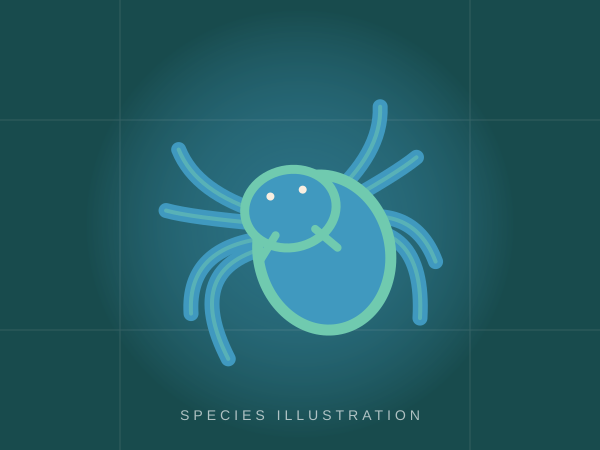
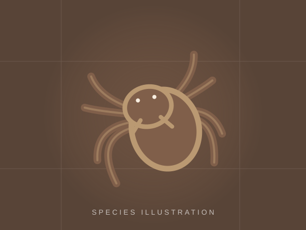
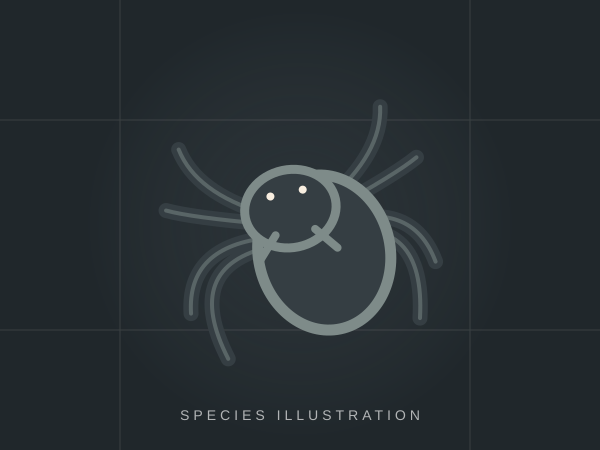
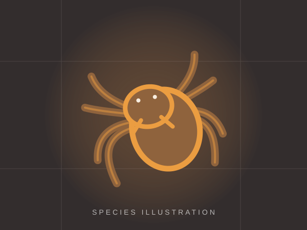

Наземний вид • Мексика
Brachypelma hamorii
Мексиканський червоноколінний
Спокійний темп росту, виразне червоно-помаранчеве забарвлення колін.
1 200 ₴
Знайомтеся з яскравими видами, дізнавайтеся про їхні особливості та обирайте свого фаворита. Жодних реальних продажів — лише демонстрація.
Переглянути каталог ↗6 видів у демонстраційному каталозіУсі ціни — навчальні приклади. Живі тварини не продаються.
Мексиканський червоноколінний
Спокійний темп росту, виразне червоно-помаранчеве забарвлення колін.

Карибський деревний
Яскраві кольори та деревний спосіб життя. Для уважного догляду.

Зеленопляшковий синій
Контрастні кольори та ефектна павутина в тераріумі.

Кучерявоволосий птицеїд
Густі кучеряві волоски й цікава поведінка під час облаштування нори.

Бразильський чорний
Насичене чорне забарвлення і неквапливий ритм життя.

Венесуельський сонячний
Контрастний орнамент; швидкий деревний вид для досвідчених утримувачів.
Tarantula House — демонстраційний сайт-каталог, присвячений різноманіттю павуків-птицеїдів. Ми зібрали короткі описи кількох популярних видів, щоб показати, як може виглядати сучасний тематичний магазин.
Цей сайт створений для університетського завдання з вебредагування та вебаналітики.
Наземні та деревні види потребують різного облаштування тераріумів.
Птицеїди не призначені для контакту руками. У деяких видів є подразнювальні волоски, усі можуть вкусити.
Перед придбанням дослідіть потреби конкретного виду та перевірте законність його походження.
Спробуйте демонстраційну форму. Вона нічого не надсилає, але покаже приклад взаємодії для аналітики.
Це навчальний сайт. Дії не створюють замовлення і жодні персональні дані не передаються.